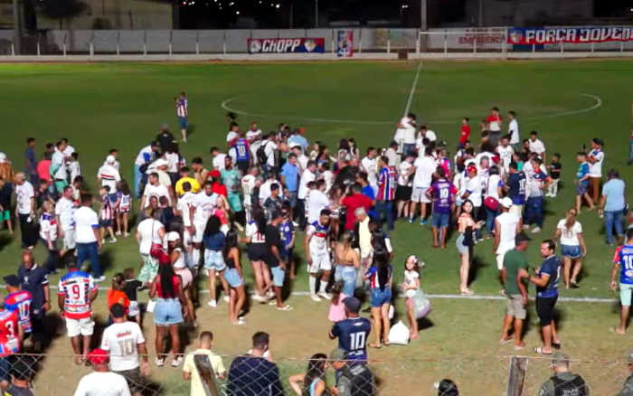
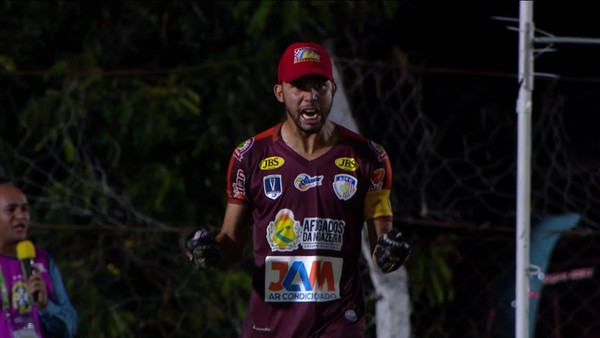

Identificação do Projeto
Sobre o Clube
Fundado em 2013, o Afogados da Ingazeira Futebol Clube representa a força do futebol no Sertão pernambucano. Conhecido carinhosamente como a Coruja do Sertão, o clube se destaca pela sua torcida apaixonada e por fazer história no estádio Vianão.
Título Série A2 Pernambucano 2023
Em 2023, a Coruja do Sertão conquistou o tão sonhado título da Série A2 do Campeonato Pernambucano, garantindo o retorno em grande estilo à elite do futebol estadual.

Elenco Levantando a Taça

Festa e Invasão da Torcida no Campo

Arte Oficial de Campeão 2023
O Histórico 'Zebraço' na Copa do Brasil (2020)
Um dos episódios mais marcantes do futebol brasileiro! O Afogados eliminou o Atlético-MG nos pênaltis no estádio Vianão, eternizando o goleiro Wallef (o "Goleiro de Boné") e parando a cidade de Afogados da Ingazeira.

Wallef: O Herói de Boné na Defesa do Pênalti

Festa Histórica no Vestiário do Vianão

O 'Carnaval da Coruja' nas Ruas da Cidade
Integração: Servidor Web & HTTP
Este site é servido através do protocolo HTTP (Hypertext Transfer Protocol). Em um ambiente de Administração de Sistemas, configurar corretamente o servidor web para responder às requisições do cliente é essencial para garantir alta performance, segurança e disponibilidade das informações do clube.